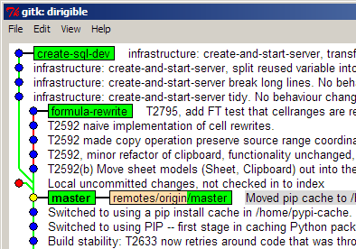

TIL: Launch Gitk displaying all branches
Update: All of the below is made totally redundant by simply using
gitk --all. Thanks Russel!
When I launch Gitk, it just displays the current branch. To display other branches, you must name them on the command line. To display all existing branches, you need to find out all the branch names:
$ git branch create-sql-dev formula-rewrite * master
Then laboriously type them in to the gitk command line:
$ gitk create-sql-dev formula-rewrite master
Alternatively, save this Bash snippet in a script on your PATH. I call mine gitka, for 'all branches':
#!/usr/bin/bash # run gitk, displaying all existing branches for b in "`git branch`"; do echo "$b"; done | tr -d "*" | xargs gitk

This works on Windows too, if you save it as 'gitka.sh', and have Cygwin installed and associate the .sh filename extension with the Cygwin Bash executable. You can then run it as 'gitka' from a Windows command prompt thingy. If you then use 'ln -s gitka.sh gitka', then you can also run it as just 'gitka' from a Cygwin bash prompt too - without this you would have had to type out the full 'gitka.sh'.